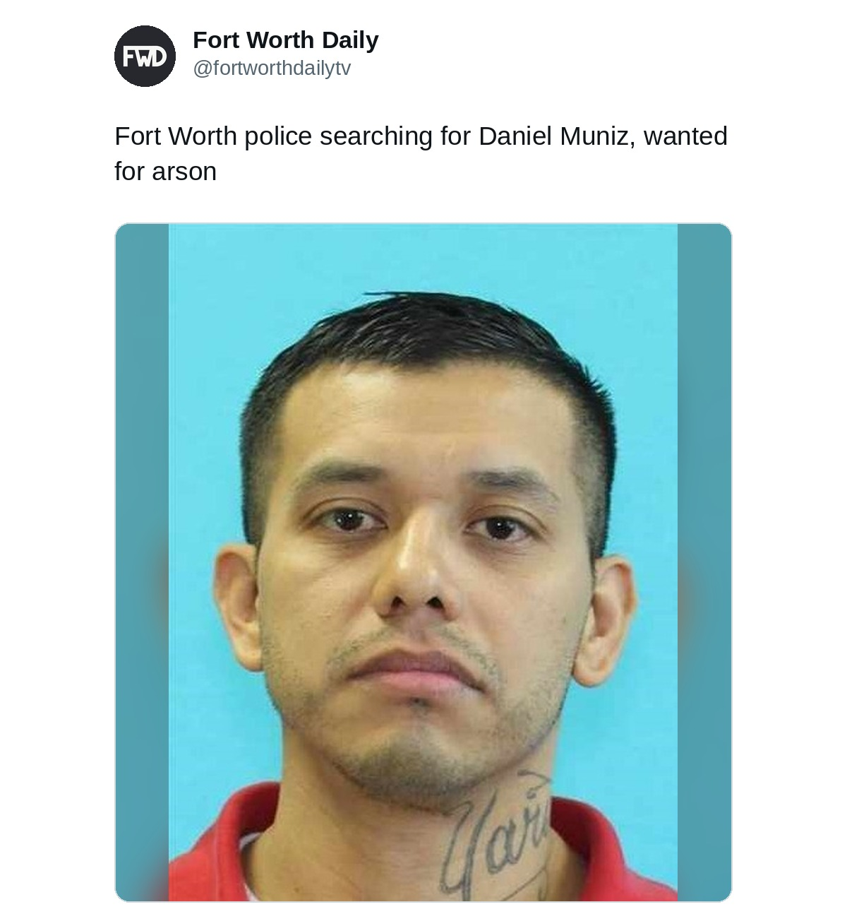
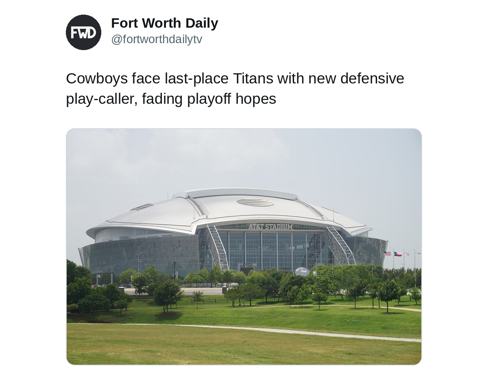

Fort Worth police are looking for Daniel Muniz, wanted for arson. Crime Stoppers is offering up to $2,000 for information leading to an arrest.
Call 817-469-TIPS (8477) or submit a tip at 469tips.com. You stay anonymous.

👍 ❤️ 😮 ✅ written to disk (dry run)
story + scoring
{
"source": "Fort Worth Police Department",
"kind": "wanted",
"score": 0.9295,
"relevance": 1,
"url": "https://police.fortworthtexas.gov/Crime-Public-Info/most-wanted",
"image_license": "official",
"image_credit": "Photo: Fort Worth Police Department"
}Dallas Cowboys quarterback Dak Prescott (4) looks to pass against the Tennessee Titans during the fourth quarter at Nissan Stadium Thursday, Dec. 29, 2022, in Nashville, Tenn.

👍 ❤️ 😮 ✅ written to disk (dry run)
story + scoring
{
"source": "NBC 5 DFW",
"kind": "rss",
"score": 0.5604,
"relevance": 2,
"url": "https://www.nbcdfw.com/news/sports/blue-star/cowboys-face-last-place-titans-with-new-play-caller-on-defense-and-fading-playoff-hopes/4108755/",
"image_license": "wikimedia-cc",
"image_credit": "Photo: Michael Barera via Wikimedia Commons (CC BY-SA 4.0)"
}WATCH: Fort Worth ISD to serve free meals over Thanksgiving Break
Five schools across the district will be open daily to feed kids under 18.
Video: WFAA on YouTube
🔗 Link post: Facebook will render the outlet's own preview photo
https://www.youtube.com/watch?v=V4y-sexmRfI
👍 ❤️ 😮 ✅ written to disk (dry run)
story + scoring
{
"source": "WFAA",
"kind": "video",
"score": 0.4179,
"relevance": 4,
"url": "https://www.youtube.com/watch?v=V4y-sexmRfI",
"image_license": null,
"image_credit": null
}